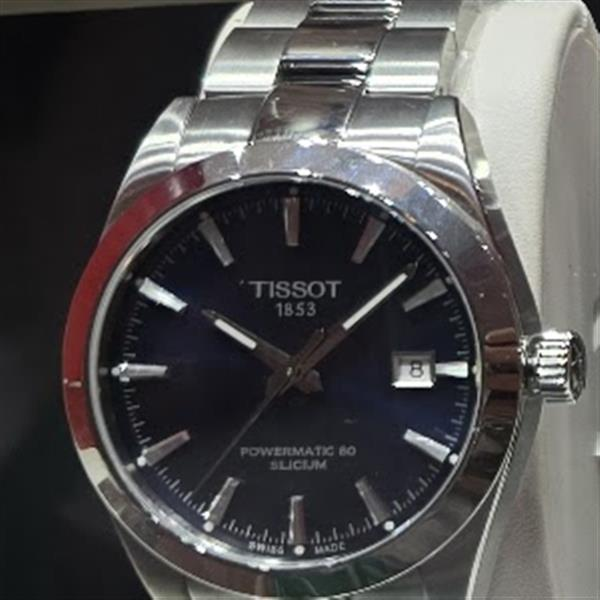
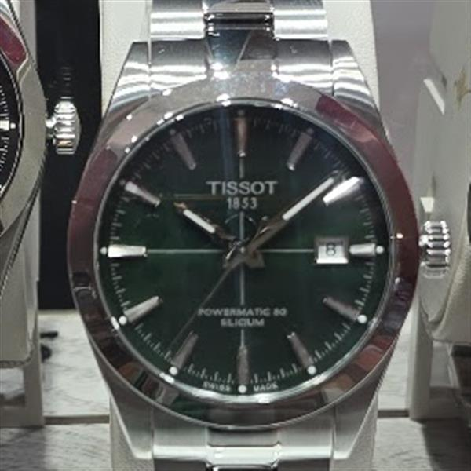
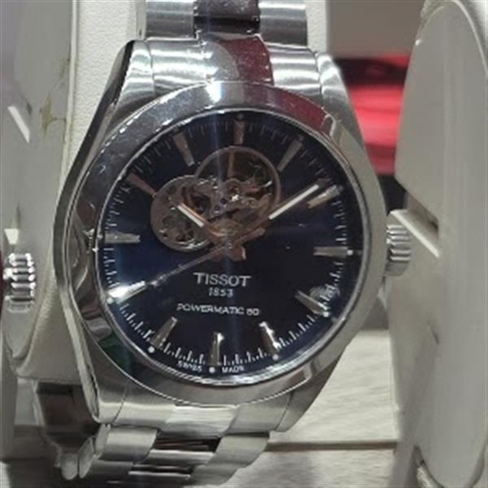
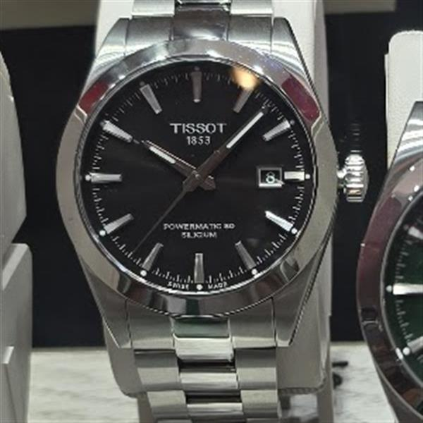

Lumio original photography
Store sightings
Each image opens its own watch note. A reference, price and purchase link are added only once Lumio verifies them.

Tissot · individual note
Black Powermatic 80
Original Lumio photograph · reference pending

Tissot · individual guide
Green Gentleman
Original Lumio photograph · verified guide

Tissot · individual note
Blue open-heart
Original Lumio photograph · reference pending

Tissot · individual note
Silver open-heart
Original Lumio photograph · reference pending

Tissot · individual note
Black classic dial
Original Lumio photograph · reference pending

Tissot · individual note
Titanium blue dial
Original Lumio photograph · reference pending